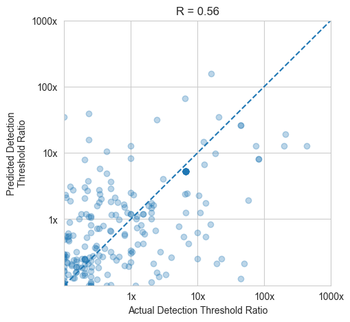
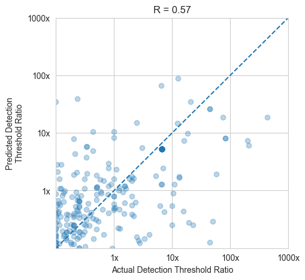

Mordred and Morgan#
# Computing mordred and morgan features and building a model from these features
%matplotlib inline
import Utils as model_helpers
import numpy as np
import pandas as pd
from sklearn.preprocessing import StandardScaler
Computing Features
half_enantiomer_data = pd.read_csv("half_enantiomer_data.csv")
# Remove line separaters
half_enantiomer_data["SMILES String"] = half_enantiomer_data["SMILES String"].apply(lambda x : x.replace("\\n", "") and x.replace("\\r", ""))
half_enantiomer_data["SMILES String"] = half_enantiomer_data["SMILES String"].apply(lambda x : x.replace("\\n", ""))
# Calculate the mordred features
mordred_data = model_helpers.calculate_features(half_enantiomer_data, "mordred")
Convering SMILES string to Mol format...
Computing 3D coordinates...
Removing CC1=C2CC(CC1C3(CC4CC(=C3C)C4(C)C)C5[C@@H](O)C6CC(=C5C)C6(C)C)C2(C)C due to failed embedding
Computing Mordred features...
100%|██████████| 206/206 [00:12<00:00, 16.57it/s]
There are 206 molecules and 1826 features
# Calculate the morgan features
morgan_data = model_helpers.calculate_features(half_enantiomer_data, "morgan")
[11:40:49] WARNING: not removing hydrogen atom without neighbors
[11:40:52] Explicit valence for atom # 1 Si, 8, is greater than permitted
[11:40:52] Explicit valence for atom # 3 Si, 8, is greater than permitted
[11:40:53] Explicit valence for atom # 1 Si, 8, is greater than permitted
[11:40:53] Explicit valence for atom # 1 Si, 8, is greater than permitted
[11:41:00] WARNING: not removing hydrogen atom without neighbors
[11:41:00] WARNING: not removing hydrogen atom without neighbors
[11:41:00] WARNING: not removing hydrogen atom without neighbors
[11:41:00] WARNING: not removing hydrogen atom without neighbors
[11:41:03] WARNING: not removing hydrogen atom without neighbors
[11:41:04] WARNING: not removing hydrogen atom without neighbors
[11:41:04] WARNING: not removing hydrogen atom without neighbors
[11:41:04] WARNING: not removing hydrogen atom without neighbors
[11:41:04] WARNING: not removing hydrogen atom without neighbors
[11:41:05] WARNING: not removing hydrogen atom without neighbors
[11:41:05] WARNING: not removing hydrogen atom without neighbors
[11:41:05] WARNING: not removing hydrogen atom without neighbors
[11:41:06] WARNING: not removing hydrogen atom without neighbors
[11:41:06] WARNING: not removing hydrogen atom without neighbors
[11:41:06] WARNING: not removing hydrogen atom without neighbors
[11:41:06] WARNING: not removing hydrogen atom without neighbors
[11:41:06] WARNING: not removing hydrogen atom without neighbors
[11:41:06] WARNING: not removing hydrogen atom without neighbors
[11:41:06] WARNING: not removing hydrogen atom without neighbors
[11:41:06] WARNING: not removing hydrogen atom without neighbors
[11:41:07] WARNING: not removing hydrogen atom without neighbors
207 similarity features for 21685 molecules
[11:41:07] WARNING: not removing hydrogen atom without neighbors
[11:41:07] WARNING: not removing hydrogen atom without neighbors
[11:41:07] WARNING: not removing hydrogen atom without neighbors
#zero_var_cols = [mordred_data[col] for col in mordred_data.iloc[:,11:] if (mordred_data[col].var() > 0) == True]
#mordred_data.drop(columns)
# Dataframe with molecules that have mordred and morgan features computed
common_index = mordred_data.index.intersection(morgan_data.index)
mordred_data = mordred_data.loc[common_index]
morgan_data = morgan_data.loc[common_index]
# Reset index
mordred_data.set_index('Molecule Name').head().iloc[:, 10:];
morgan_data.set_index('Molecule Name').head().iloc[:, 10:];
# Data frame that has both the mordred and morgan features
both = mordred_data.join(morgan_data.iloc[:,10:], how="inner", rsuffix='morg_')
both.head()
| Unnamed: 0 | Unnamed: 0.1 | Molecule Name | Pubchem ID # | Note | Other SMILES | Method | Contributor | Detection Threshold | Detection Units | ... | O.[OH-].[O].[O-][Si](=O)[O-].[Mg].[Al].[Fe] | CCCCOC(=O)/C=C\C(=O)OCCCC.CC(=O)OC=C.C[C@]12CC[C@H](C1(C)C)C[C@@H]2OC(=O)C=C | C=CC(=O)N.C=CC(=O)O.[Na] | C[Si](C)(Cl)Cl.O=[Si]=O | CCCC/C=C/CCO.CC(=O)O | CN(C)CCCNC(=O)NCCCN(C)C.C(CCl)OCCCl | C(=O)([O-])[O-].O.[OH-].[OH-].[OH-].[OH-].[OH-].[OH-].[OH-].[Mg+2].[Al+3] | CCC/C=C/CO.C1=CC=C(C=C1)C(=O)O | CC(=C)C(=O)NCCC[N+](C)(C)C.COC(=O)C=C.C=CC(=O)O.[Cl-] | C(C(C(F)(F)F)(OC(C(C(F)(F)F)(OC(C(C(F)(F)F)(O)F)(F)F)F)(F)F)F)(F)F | |
|---|---|---|---|---|---|---|---|---|---|---|---|---|---|---|---|---|---|---|---|---|---|
| \rCC(=O)C(/C)=C/[C@H]1C(=CCCC1(C)C)C\r | 406 | 406 | (+)-(6R)-alpha-Iso-methylionone (ee = 94%) | 5372174 | NaN | \rCC(=O)C(/C)=C/[C@H]1C(=CCCC1(C)C)C\r | chem draw + cactus | LC | 7.90E-02 | ng/L air | ... | 0.032258 | 0.202247 | 0.140845 | 0.093750 | 0.157303 | 0.104478 | 0.090909 | 0.142857 | 0.189655 | 0.000000 |
| \rCCCCCC[C@H](C)Oc1cnccn1 | 320 | 320 | (+)-2-{[(1S)-1-methylheptyl]oxy}pyrazine | 122379392 | NaN | \rCCCCCC[C@H](C)Oc1cnccn1\r | chem draw + cactus | LC | 3.00E+01 | NaN | ... | 0.000000 | 0.134715 | 0.000000 | 0.050633 | 0.211538 | 0.134228 | 0.000000 | 0.176991 | 0.106870 | 0.026846 |
| \rCC[C@H](C)Oc1cnccn1\r | 314 | 314 | (+)-2-{[(1S)-1-methylpropyl]oxy}pyrazine | 520098 | CAS No.24168-70-5 from https://www.sigmaaldric... | \rCC[C@H](C)Oc1cnccn1\r | chem draw + cactus | LC | 1.00E+02 | NaN | ... | 0.000000 | 0.059524 | 0.000000 | 0.074074 | 0.101266 | 0.064516 | 0.000000 | 0.159091 | 0.075472 | 0.032258 |
| \rC[C@H]1OCC[C@@H]1SC(C)=O | 366 | 366 | (2R,3S)-(+)-2-methyltetrahydrofuran-3-thiol ac... | 7157263 | https://pubchem.ncbi.nlm.nih.gov/compound/2S_3... | \rC[C@H]1OCC[C@@H]1SC(C)=O\r | chem draw + cactus | LC | 1.86E+01 | ng/L air | ... | 0.044444 | 0.136646 | 0.111111 | 0.127660 | 0.166667 | 0.085470 | 0.122449 | 0.098765 | 0.121212 | 0.000000 |
| C(CC(=O)O)[C@@H](C(=O)O)N | 24 | 24 | L-(-)-glutamatic acid | 33032 | NaN | NaN | NaN | NaN | 4.00E-01 | ug/L in water | ... | 0.047619 | 0.101266 | 0.352941 | 0.090909 | 0.231884 | 0.087719 | 0.130435 | 0.205128 | 0.208333 | 0.035088 |
5 rows × 23533 columns
#Need to drop var columns
print(both.var().max())
print(both.var().min())
340658911179732.4
0.0
# Gets all Mordred or Mogan features that have numeric values and not Null values
# Joins the final mordred and morgan features
finite_mordred = model_helpers.finite_features(mordred_data)
finite_morgan = model_helpers.finite_features(morgan_data)
both_features = finite_mordred | finite_morgan
Model
# Illustrate the magnitude differences across enantiomeric pairs in the dataset
model_helpers.fold_difference_of_enantiomers(half_enantiomer_data)
# Gets the appropriate parameter values for mordred model
# Gets the valid features (not null values) from feature data frame and the log_abs values from the feature dataframe
X_morded = mordred_data[finite_mordred]
y = mordred_data['log_abs']
X_morded = X_morded[y < 10]
y_mordred = y[y < 10]
Xn_mordred = pd.DataFrame(StandardScaler().fit_transform(X_morded), index=X_morded.index, columns=X_morded.columns)
# Gets the appropriate parameter values for Morgan model
# Gets the valid features (not null values) from feature data frame and the log_abs values from the feature dataframe
x_morgan = morgan_data[finite_morgan]
y_morgan = morgan_data["log_abs"]
x_morgan = x_morgan[y_morgan < 10]
y_morgan = y_morgan[y_morgan < 10]
Xn_morgan = pd.DataFrame(StandardScaler().fit_transform(x_morgan), index=x_morgan.index, columns=x_morgan.columns)
# Model for Morgan data
model_helpers.create_model(Xn_morgan, y_morgan)
100%|██████████| 13/13 [23:58<00:00, 110.63s/it]
model_helpers.cross_val(Xn_morgan, y_morgan)

# Model for Mordred data
model_helpers.create_model(Xn_mordred, y_mordred)
100%|██████████| 13/13 [01:02<00:00, 4.77s/it]
model_helpers.cross_val(Xn_mordred, y_mordred)
